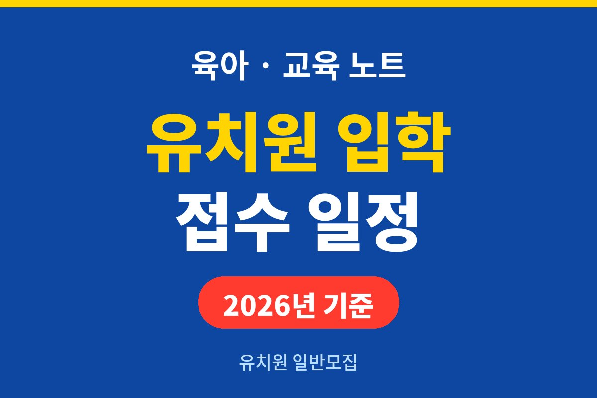
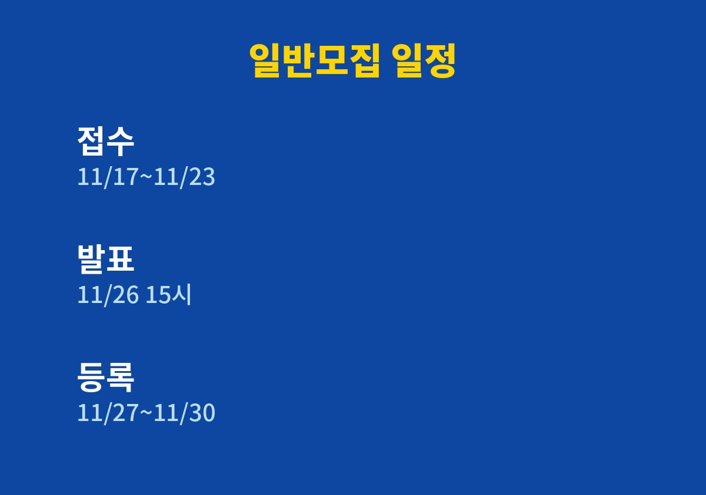
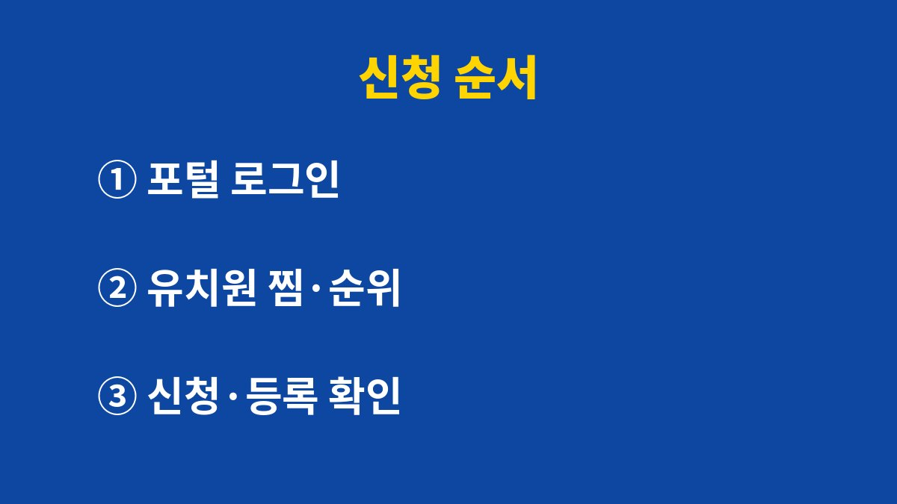

유치원 일반모집 접수는 2026년 11월 17일 오전 9시부터 23일 오후 6시까지이고, 우선모집 등록은 11일 18시에 이미 끝났다.
2027학년도 유치원 입학 신청은 유보통합포털에서 하며, 일정은 시·도교육청마다 다를 수 있어 보도된 내용을 기준으로 적었다.
아이가 몇 년생인지에 따라 신청 방법이 갈리는 경우도 있어 대상 연령부터 같이 본다.
우선모집 결과는 11월 9일 15시에 발표됐고, 등록은 10일 9시부터 11일 18시까지였다.
일반모집 접수는 11월 17일 9시부터 23일 18시까지다.
결과는 26일 15시에 나오고 등록은 27일 9시부터 30일 18시까지다.
마지막 날에는 접속이 몰릴 수 있으니 첫날이나 둘째 날에 끝내는 편이 낫다.
| 단계 | 날짜 | 할 일 |
|---|---|---|
| 일반모집 접수 | 11월 17일 9시 ~ 23일 18시 | 희망 유치원 1~3순위 신청 |
| 결과 발표 | 11월 26일 15시 | 유보통합포털에서 확인 |
| 등록 | 11월 27일 9시 ~ 30일 18시 | 선발된 유치원 1곳에 등록 |
| 추가모집 | 12월 1일 ~ 내년 2월 12일(보도 기준) | 유치원별 수시 발표 |

2027학년도 기준으로 만 3세는 2023년생, 만 4세는 2022년생, 만 5세는 2021년생이다.
2024년 1~2월생은 조기입학 대상으로 보도됐고, 희망 유치원에 먼저 문의한 뒤 현장에서 접수한다.
취학을 미룬 아이도 같은 방식으로 유치원에 문의하면 된다.
연령이 맞아도 유치원마다 모집 인원과 방과후과정 운영 여부가 다르니 모집요강의 학급 수와 정원 칸을 먼저 본다.
같은 나이 반이라도 병설유치원과 사립유치원은 원비와 운영 시간이 달라 신청 전에 비교해 둔다.
법정 저소득층 가정, 국가보훈대상자 가정 자녀, 북한이탈주민 가정은 우선모집 대상으로 안내된다.
이 자격은 보건복지부, 국가보훈부, 통일부 시스템으로 온라인 확인한다.
그 밖의 우선 조건은 유치원과 지역에 따라 유치원장이 정한다.
조건을 사실과 다르게 입력하면 선발이 취소될 수 있다.

찜하기는 신청이 아니다.
찜 목록에서 신청을 누르고 접수 상태까지 봐야 원서 제출이 끝난다.
퇴근 후 밤에 급하게 하다가 찜만 해 놓고 닫는 일이 생기기 쉽다.
방과후과정을 쓸 계획이라면 맞벌이 증빙이 필요한지도 이 단계에서 같이 본다.
교육청 정책에 따라 서류가 필요 없는 곳도 있어 모집요강 문구가 기준이다.
선발 확인과 등록은 별도 절차이고, 등록 기간 안에 하지 않으면 입학을 포기한 것으로 처리된다.
일반모집은 희망순 중복선발제한 추첨이라 상위 희망 유치원에 선발되면 아래 순위 추첨에서는 자동으로 빠진다.
그래서 1순위에는 정말 보내고 싶은 곳을 적고, 통학이 쉬운 곳을 뒤 순위에 두는 식으로 정하면 마음이 편하다.
다만 이 순서가 모든 가정에 맞는 것은 아니다.
집 근처 유치원이 인기가 높아 경쟁이 센 곳이라면 1순위로 거리가 먼 곳을 쓰는 편이 오히려 합리적일 수 있다.
등록 마감일은 신청 접수 마감일과 다르니 휴대폰 알림에 따로 넣어 둔다.
이 글의 날짜는 일부 보도를 바탕으로 한 것이라 사는 지역의 시·도교육청 일정과 다를 수 있다.
11월 17일 전에 유보통합포털에서 희망 유치원의 모집요강을 한 번 더 열어 본다.
서류나 대상 연령이 애매하면 유치원에 전화로 묻는 쪽이 빠르다.
일반모집에서 떨어졌더라도 12월 대기자 안내와 추가모집이 이어지므로 결과 발표 뒤에도 포털을 열어 본다.
참고 자료: 유보통합포털 「유치원 입학 안내」를 인용한 위키트리·경북매일 보도(2026년 11월 확인)
※ 2026년 기준 공식 자료를 바탕으로 정리한 일반 정보이며, 아이의 발달이나 건강에 걱정이 있다면 소아청소년과 등 전문가와 상담하길 바란다.